- Williams Chandra [15.111.0482]
- Rony Gunawan [15.111.1437]
- William Makmur [15.111.1283]
- Gian Genesius B [15.111.0601]

Apa itu Dota 2?
Dota 2 adalah sebuah permainan multiplayer online battle arena, merupakan sekuel dari Defense of the Ancients mod pada Warcraft 3 : Reign of Chaos dan Warcraft 3 : The Frozen Throne. DotA 2 dikembangkan oleh Valve Corporation, terbit juli 2013 dota 2 dapat dimainkan secara gratis pada operation system Microsoft Windows, OS X and Linux. Dota 2 dapat dimainkan secara eksklusif melalui distributor resmi valve, Steam.
Permainan Dota 2?
Dota 2 dimainkan oleh 2 team yang beranggota 5 orang pemain, setiap tim memiliki markas yang berada dipojok peta, setiap markas memiliki satu bangunan bernama "Ancient", Di mana tim harus berusaha menghancurkan "Ancient" tim lainnya agar dapat memenangkan pertandingan. Setiap pemain mengontrol satu karakter "Hero" yang berfokus pada menaikan level, mengumpulkan gold, membeli item dan melawan tim lawan untuk menang.
Perkembangan Dota 2
Pengembangan Dota 2 dimulai sejak tahun 2009. Ketika pengembang mod DotA, Icefrog, dipekerjakan oleh Valve sebagai lead designer. Dota 2 dipuji oleh kritikus karena gameplay-nya, kualitas pembuatan dan kesetiaan pada gameplay pendahulu (DotA mod Warcraft 3). tetapi Dota 2 juga menuai kritik sebagai game yang susah dipelajari dan para pemain yang tidak ramah. Dota 2 menjadi game yang memiliki aktivitas pemain paling banyak di Steam, dengan 800,000 pemain online bersamaan per hari.
Prize Pool Terbesar di eSports !
Tahun 2016 Dota 2 mengadakan turnamen tingkat internasional yang bernama The International 6 dengan total hadiah $20.4M ( sekitar Rp.271.238.400.000 )
Dapat Dimainkan Secara Gratis !
Hero Dota 2
Tipe : Strength
 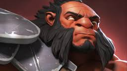
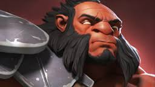

 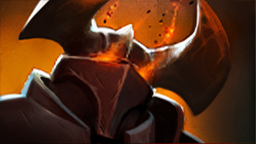
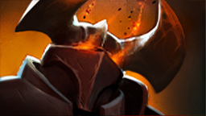


 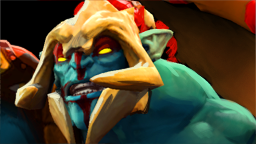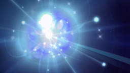
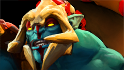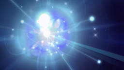


 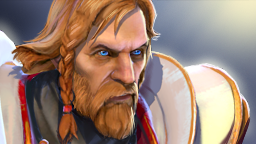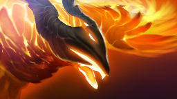
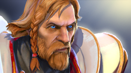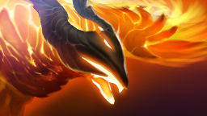


 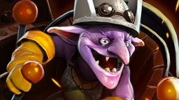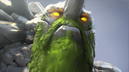
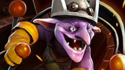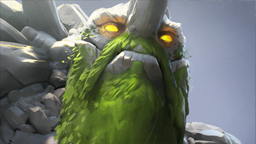


Tipe : Agility


 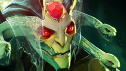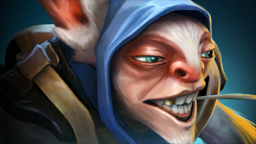
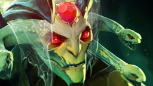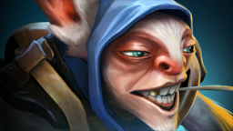


 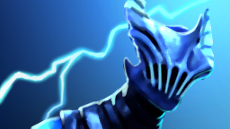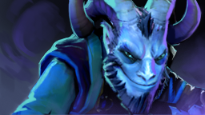
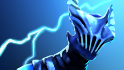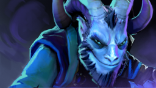 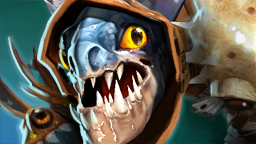
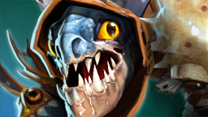
 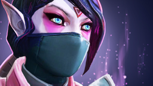
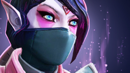


Tipe : Intelligence


 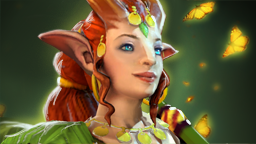
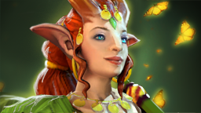

 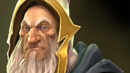
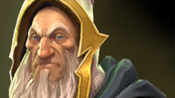
 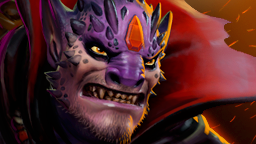
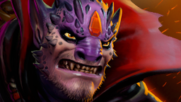 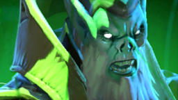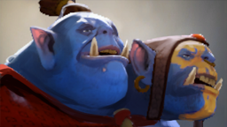
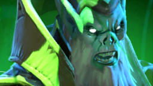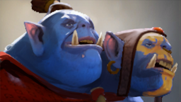 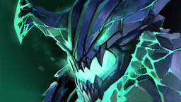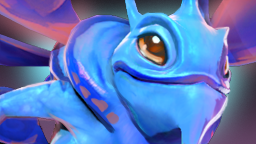
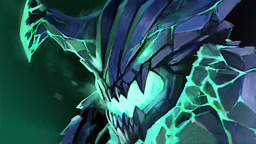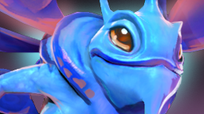 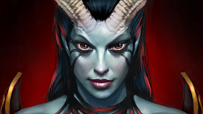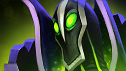
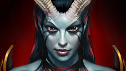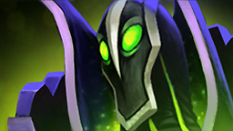
 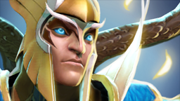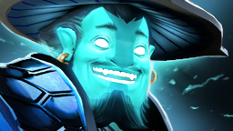
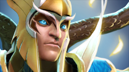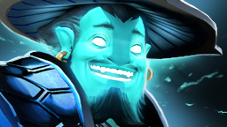 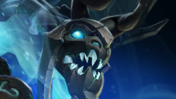
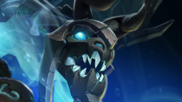 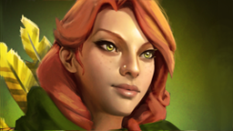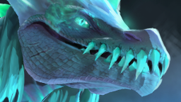
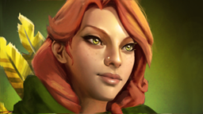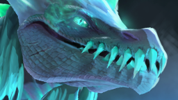Pro Player Equipment

Tips - Tips Bermain :
1. Selalu PMA ( Positive Mental Attitude )
2. Jangan selalu menyalahkan rekan 1 tim ( blaming )
3. Selalu support rekan ketika tim dalam keadaan kalah
4. Selalu percaya akan COMEBACK IS REAL !